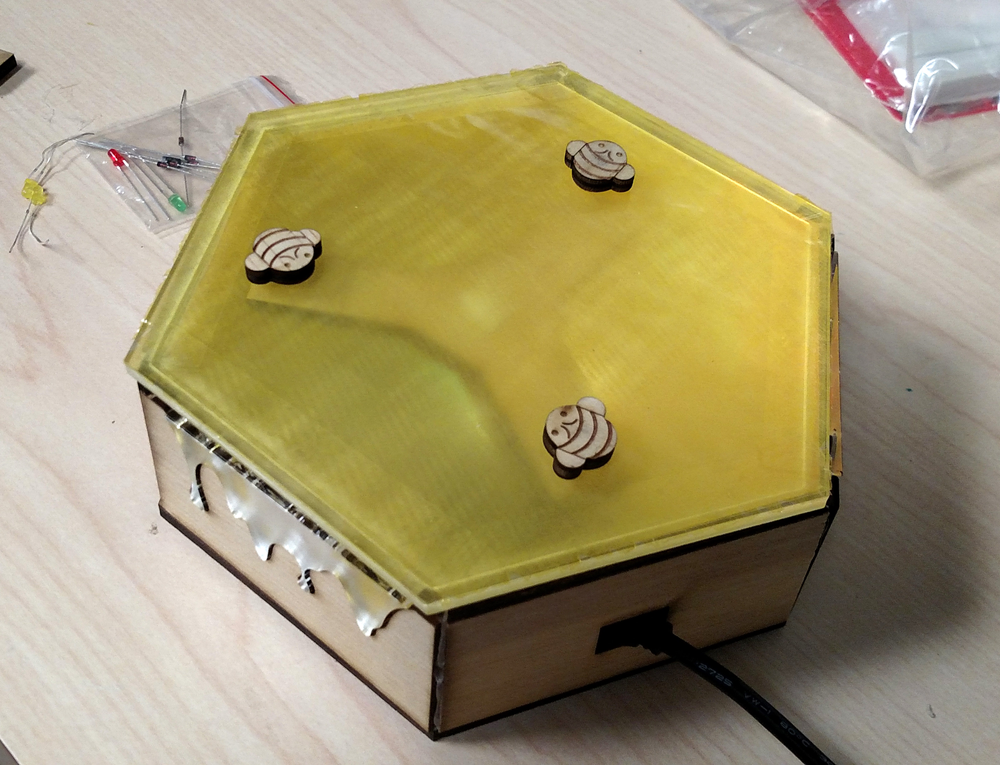
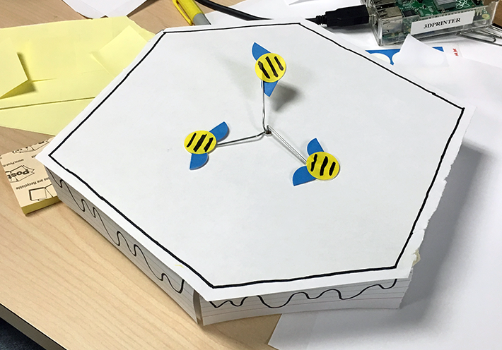
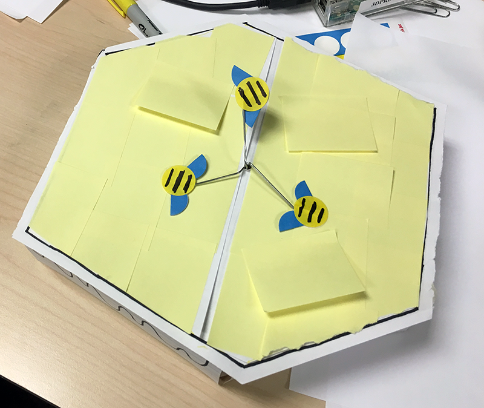
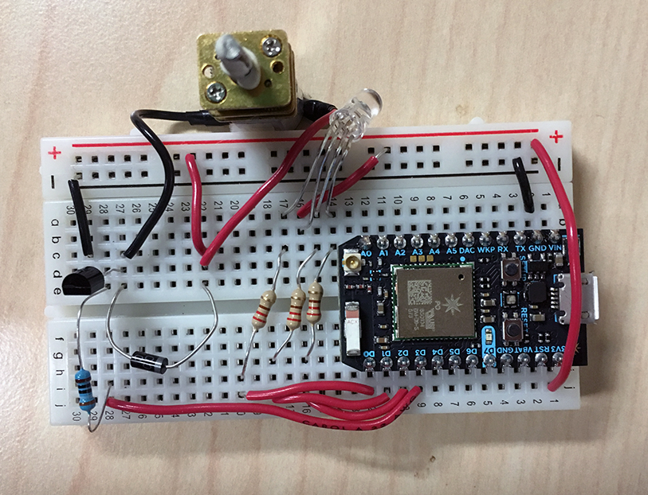
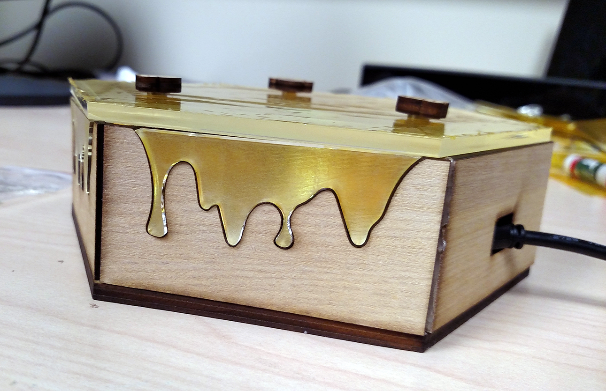

Am-bee-nt Display
IoT Device Prototype
Software
Photon Code · Node.js · Google Drive API
Hardware & Tools
Photon · laser cutter
Skills Used
concept design · paper prototyping · circuit building
With online collaboration tools like Google Drive, colleagues are able to remotely work on a shared document together; however, there is a lack of real-time visibility which diminishes the perception of working as a team. The Am-bee-nt Display is a physical device that activates when others are currently working on a shared document: when a user begins editing the document, the “worker bees” begin to move. As more edits are made, the honey glows brighter to represent more work completed. Potentially such an IoT device could help with facilitating impromptu real-time collaboration, even when team members are working remotely. This was a two-person project in an HCI course at RIT.
Initial Idea
This project was a rather open-ended one, as our only constraint was creating an ambient display connected to the internet. Ambient displays are generally devices which relay information to the user in a passive way; that is, the user can quickly glance at the display and get the information they need without having to physically interact with it. As we brainstormed ideas, we settled on creating an ambient display that could help people who collaborate via Google Docs. This is a common scenario for students as well as for teams in the workplace.
So how could we help collaborators? We researched issues related to remote collaboration and found that people who worked on a project from different locations tended to be less productive than when people worked in a co-located environment. One of the reasons was that because there is less awareness of others, it becomes more difficult to spontaneously work together. With Google Docs, there is a similar sense of working in a vacuum: unless you plan ahead that you and your collaborators will work on the document together at a specific time, it is very unlikely that any realtime collaboration will occur.
With our ambient display, we wanted to make it easy for someone to be aware when others were actively working on a Google Doc, even if they were not working on the document themselves at the time. As a guideline for ambient displays, they should not be disruptive in someone's workflow -- this is unlike the notifications that pop up all over our screens. As such, we aimed to make our ambient display pleasant to look at but not too overbearing.
Paper Prototype
We liked the idea of using the metaphor of worker bees as a design point for our display. We started to draw out designs and settled on the idea of the bees moving to represent when people were actively working on a shared Google Doc. We then built a paper prototype with on-hand office supplies to determine if our concept was feasible. This also helped us identify places to alter our design as we created the prototype.
As a better indicator for how much more had been added or changed in a Google Doc, we also mocked up the idea of using a glowing light inside the device that would get increasingly brighter with more edits to the document. We liked how this looked on the paper prototype, so we integrated this into our final display design. Continuing with our bee metaphor, the glowing light would represent the "honey" being made by the busy worker bees.
Circuit and Code Development
For the circuit, we used a motor that would control the movement of the bees, as well as an LED that would provide the glowing light inside the container.
By using the Google Drive API, we could send a message to the circuit whenever a modification to a particular document was made. Once the message was received by the circuit, it would start up the motor and turn on the LED. As more modifications were made to the document (based on the last time the user was active on Google Drive), the LED would get increasingly brighter.
Display Development
Since we had both acrylic and wood on hand for building material, we chose wood as the base for a natural look, while the acrylic would allow the LED light to bleed through the container. It also provided a nice glossy look to better convey the appearance of honey. During our testing, we noticed that the yellow light from the LED was not bright enough to see through the acrylic. As a fix, we used aluminum foil to increase the amount of light within the container (as the light could then reflect off the inside walls of the container) and also yellow cellophane for improved aesthetics.
To mimic the somewhat erratic-looking motion of bees, we were inspired by toys that use magnets to move around set pieces, such as gliding an ice skater across a lake. The magnets we used initially turned out to be too strong, which froze our bees in place. However, with enough distance between the two magnets, we were able to get the bees to glide smoothly.

Final Thoughts
For the most part, our am-bee-nt display worked as intended. I was impressed with how much we were able to accomplish in the few weeks we had to work on the project, and how well our display looked aesthetically. Additionally, learning how to use the Google Drive API to receive realtime information about edits to a Google Doc was an exciting discovery for me, and it was a critical part of the intended use of our display. Troubleshooting our magnetic bees was fairly difficult, but once we found the sweet spot for bee motion, the display worked great. If we had more time to continue developing the display, I definitely would use a brighter source of light within the container so that it could more visibly glow. I also would have added a feature for the user to manually choose which document to track, either through a separate interface or directly through the display.